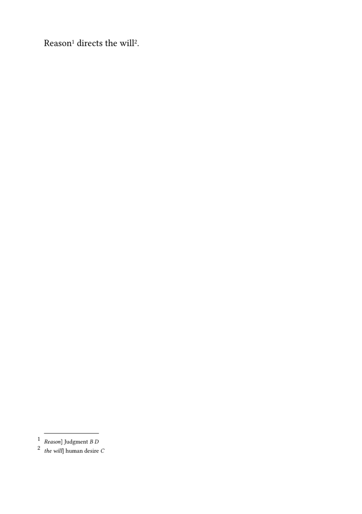
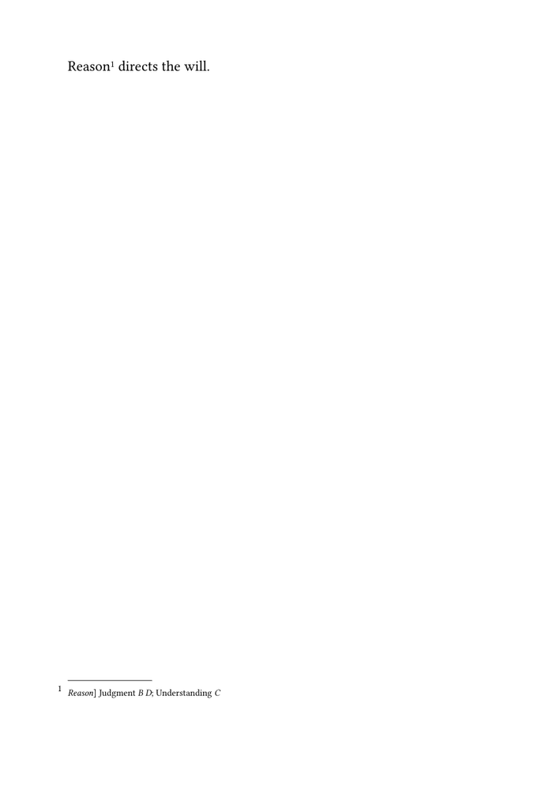
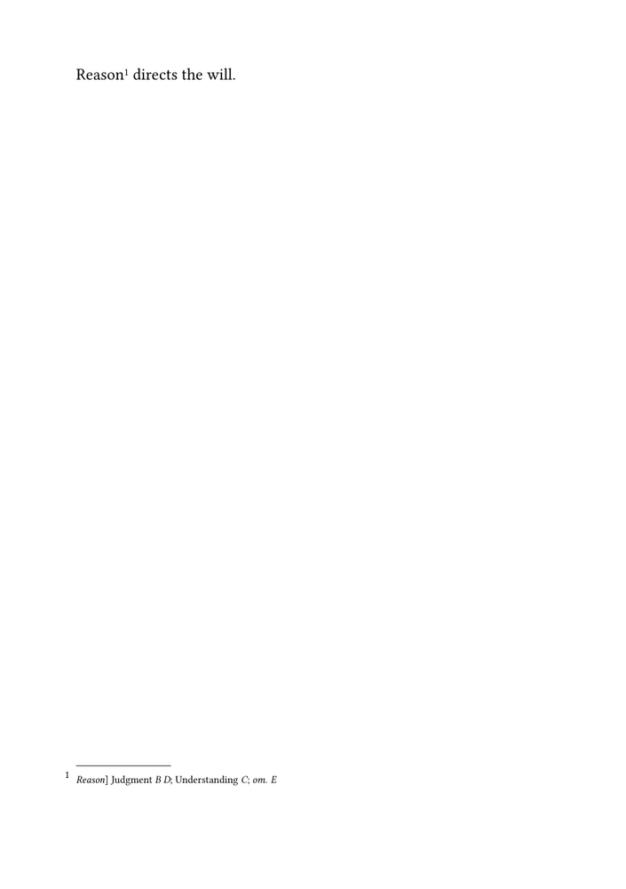
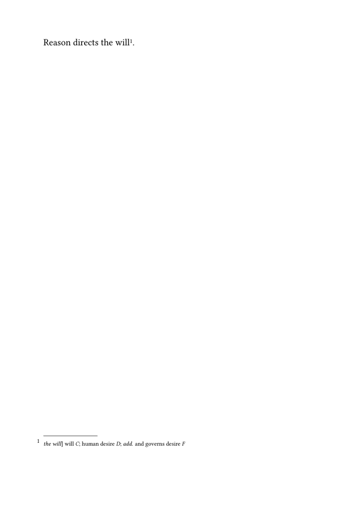
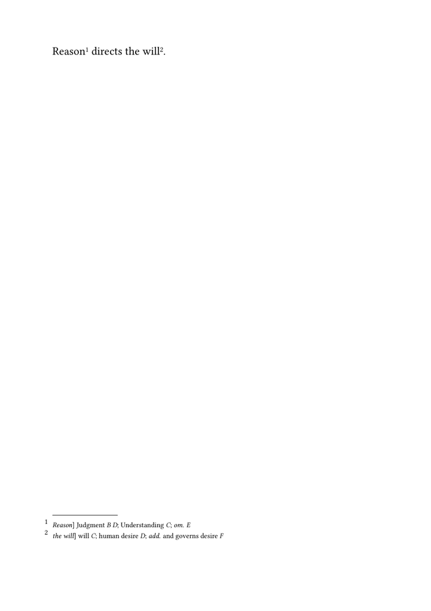

🚧 Work in progress. This guide is currently being drafted, corrected, and reviewed. Please do not modify the code unless this banner has been removed.
Critical apparatus guides: Orientation · Glossary · Guide 1 of 6 · Next: Guide 2 — Formatting a critical apparatus →
A critical apparatus records the textual evidence on which an edited
text is based. It connects a passage printed in the edited text with the
alternative readings, omissions, additions, or other textual operations
reported by the editor, together with the witnesses or editors associated
with them.
This guide constructs a small critical apparatus with a dedicated ConTeXt note series. It begins with a complete minimal example, then rebuilds that example step by step so that the function of each command remains visible.
The progression is deliberately simple:
- define an independent note series for the apparatus;
- attach one apparatus entry directly to a passage;
- separate the lemma, reading, and witnesses into reusable command arguments;
- allow several readings or textual operations to belong to the same lemma;
- add commands for omissions and additions.
By the end of the guide, the source will be able to express an entry such as:
Reason] Judgment B D; Understanding C; om. E
In this entry:
-
Reasonis the lemma : the passage printed in the edited text to which the entry refers; -
JudgmentandUnderstandingare alternative readings ; -
B,C, andDare witness sigla ; -
om. Erecords an omission in witnessE.
A reading supplies textual wording. An omission does something different: it records that no corresponding wording is present in the named witness. In this guide, readings, omissions, and additions are therefore represented by different commands.
The method developed here is suitable for a small edition, for a teaching
example, or for experimenting with the design of an apparatus. It uses
ordinary ConTeXt macros and literal witness sigla. ConTeXt does not yet know
that B and D identify declared witnesses; they are
still pieces of text supplied by the editor.
For centrally declared witnesses and reusable witness metadata, see Managing witnesses and textual variants.
How this tutorial works. Each stage introduces one editorial problem, one small ConTeXt mechanism, and one complete result. The first examples use only one apparatus entry. Later sections combine several readings and textual operations without changing the basic note mechanism.
Important distinction. A ConTeXt note series named
apparatus is only a typographical mechanism. It becomes a
critical apparatus because of the textual evidence recorded in its entries
and the editorial conventions used to represent that evidence.
For definitions of the principal terms used in this guide, see the Glossary of critical edition terms.
Contents
- 1 1. What you will build
- 2 2. Define a separate apparatus note series
- 3 3. Separate the lemma, reading, and witnesses
- 4 4. Record several readings for one lemma
- 5 5. Record an omission
- 6 6. Record an addition
- 7 7. Build the complete passage
- 8 8. Understand the progression
- 9 9. Limits of the simple approach
- 10 10. Choose the next guide
- 11 11. Complete source
- 12 12. Online resources
- 13 Related pages
1. What you will build
The running example uses the edited sentence:
Reason directs the will.
Suppose that the editor has consulted five witnesses:
| Siglum | Description | Textual evidence |
|---|---|---|
| A | Principal manuscript | Reason directs the will. |
| B | Second manuscript | Judgment directs the will. |
| C | Early printed edition | Understanding directs the will. |
| D | Later manuscript | Judgment directs the will. |
| E | Damaged manuscript | Omits Reason |
The edited text prints Reason, the reading found in witness A. The apparatus nevertheless records the alternative evidence:
Reason] Judgment B D; Understanding C; om. E
This compact entry contains the following elements:
| Element | Content | Function |
|---|---|---|
| Lemma | Reason
|
Identifies the passage in the edited text to which the entry refers |
| First alternative reading | Judgment
|
Gives the wording transmitted by witnesses B and D
|
| Second alternative reading | Understanding
|
Gives the wording transmitted by witness C
|
| Textual operation | om.
|
Records the omission of the lemma in witness E
|
The closing bracket after the lemma separates the text printed by the editor from the alternatives reported in the apparatus. The semicolons separate different readings or textual operations belonging to the same lemma.
Editorial notation. The closing bracket, the semicolons, and the
abbreviation om. are conventions chosen for this example. They
are not imposed by ConTeXt and may be replaced by the notation used in a
particular edition.
2. Define a separate apparatus note series
The simplest ConTeXt implementation treats the apparatus as an independent series of notes. The entries may appear at the bottom of the page, like ordinary footnotes, but they remain logically and typographically separate from explanatory notes.
The following complete example creates two apparatus entries:
-
\mainlanguage[en] \setuppapersize[A5] \setupbodyfont [libertinus,11pt] \setuplayout [width=middle, height=middle, backspace=18mm, topspace=15mm, header=0mm, footer=10mm] \definenote [apparatus] \setupnote [apparatus] [location=page] \setupnotation [apparatus] [way=bypage, numberconversion=numbers, style=\tfx] \starttext Reason\apparatus{Reason] Judgment {\it B}} directs the will\apparatus{the will] human desire {\it C}}. \stoptext
The example contains three distinct operations:
- defining a note series;
- configuring its placement and appearance;
- inserting apparatus entries in the edited text.
2.1. Create the note series
The command:
\definenote [apparatus]
creates a note category named apparatus.
ConTeXt also creates a corresponding insertion command:
\apparatus{...}
Every call to \apparatus places a marker in the edited text and
adds one entry to the apparatus.
ConTeXt principle. The name apparatus is chosen by the
author. It is not a predefined critical-editing command. The same mechanism
can be used to create many independent note series with different names.
2.2. Place the apparatus at the bottom of the page
The setup:
\setupnote [apparatus] [location=page]
places the collected entries at page level. The apparatus therefore occupies the same general typographical region as footnotes while remaining a separate note category.
2.3. Configure markers and entries
The notation setup controls the numbering and appearance of the series:
\setupnotation [apparatus] [way=bypage, numberconversion=numbers, style=\tfx]
Here:
-
way=bypagerestarts the numbering on each page; -
numberconversion=numbersuses Arabic numerals; -
style=\tfxsets the apparatus entries in a smaller relative size.
2.4. Insert an apparatus entry directly
In the edited text:
Reason\apparatus{Reason] Judgment {\it B}}
the word Reason is printed normally. The command
\apparatus then adds a marker and creates the entry:
Reason] Judgment B
At this stage, the entire apparatus entry is entered as one formatted string:
Reason] Judgment {\it B}
ConTeXt does not distinguish the lemma, the reading, and the witness siglum. It receives only the complete contents of the note.
This direct method is sufficient for a very small apparatus, but it becomes difficult to maintain when the same punctuation and typographical conventions must be repeated in many entries.
3. Separate the lemma, reading, and witnesses
The next step is to define a wrapper command that receives the principal editorial elements as separate arguments.
Define:
% Print the lemma and attach one apparatus entry.
\define[3]\variant
{#1\apparatus{{\it #1}] #2 {\it #3}}}
The command takes three arguments:
| Argument | Editorial content | Example |
|---|---|---|
#1
|
Lemma printed in the edited text | Reason
|
#2
|
Alternative reading | Judgment
|
#3
|
Witness siglum or sigla | B D
|
It is used as follows:
\variant
{Reason}
{Judgment}
{B D}
The command prints the lemma in the edited text and produces the apparatus entry:
Reason] Judgment B D
The following complete example uses the command twice:
-
\mainlanguage[en] \setuppapersize[A5] \setupbodyfont [libertinus,11pt] \setuplayout [width=middle, height=middle, backspace=18mm, topspace=15mm, header=0mm, footer=10mm] \definenote [apparatus] \setupnote [apparatus] [location=page] \setupnotation [apparatus] [way=bypage, numberconversion=numbers, style=\tfx] % Print a lemma and attach one alternative reading. \define[3]\variant {#1\apparatus{{\it #1}] #2 {\it #3}}} \starttext \variant {Reason} {Judgment} {B D} directs \variant {the will} {human desire} {C}. \stoptext
-

The source now exposes three editorial roles:
\variant
{Reason} % lemma
{Judgment} % alternative reading
{B D} % supporting witnesses
The command definition determines how those arguments are printed:
\define[3]\variant
{#1\apparatus{{\it #1}] #2 {\it #3}}}
The first occurrence of #1 prints the lemma in the edited text.
The same argument appears again inside the apparatus entry. The closing
bracket, spacing, and italic treatment of the lemma and sigla are supplied by
the command definition.
This separation has two immediate advantages:
- each apparatus call follows the same source pattern;
- changing the printed notation requires changing only the command definition.
For example, this version prints the lemma upright and the witness sigla in bold:
\define[3]\variant
{#1\apparatus{#1] #2 {\bf #3}}}
The arguments in the document remain unchanged.
What has changed? The source is now more explicit, but it is not yet a
database or a validated editorial record. The three arguments remain ordinary
macro arguments. ConTeXt does not yet know that B and
D are witness identifiers, nor can it check whether they have
been declared correctly.
The three-argument form is useful when a lemma has only one alternative reading. The next section adapts the interface so that several readings or textual operations can belong to the same apparatus entry.
4. Record several readings for one lemma
The three-argument form of \variant is useful when a lemma has
only one alternative reading:
\variant
{Reason}
{Judgment}
{B D}
A real apparatus, however, often records several readings or textual operations for the same lemma. The entry:
Reason] Judgment B D; Understanding C; om. E
contains one lemma, two alternative readings, and one omission.
To represent that structure more clearly, the source now distinguishes two levels:
-
\variantcreates the complete apparatus entry and attaches it to the lemma; -
\readingrepresents one alternative reading and its supporting witnesses.
4.1. Redefine the apparatus entry command
Redefine \variant with two arguments:
% Print the lemma and attach a complete list of readings or operations.
\define[2]\variant
{#1\apparatus{{\it #1}] #2}}
The arguments now have the following functions:
| Argument | Editorial content | Example |
|---|---|---|
#1
|
Lemma printed in the edited text | Reason
|
#2
|
Complete list of readings or textual operations | \reading{Judgment}{B D}; ...
|
The second argument is no longer one reading. It is the complete contents of the apparatus entry after the lemma.
4.2. Define one alternative reading
Define:
% Print one alternative reading followed by its witness sigla.
\define[2]\reading
{#1 {\it #2}}
The two arguments are:
| Argument | Editorial content | Example |
|---|---|---|
#1
|
Alternative textual wording | Judgment
|
#2
|
Witness siglum or sigla | B D
|
The command:
\reading
{Judgment}
{B D}
produces:
Judgment B D
The reading remains upright, while the witness sigla are set in italics by the command definition.
4.3. Combine several readings
Several \reading commands can now be placed in the second
argument of \variant:
\variant
{Reason}
{\reading{Judgment}{B D};
\reading{Understanding}{C}}
This produces the apparatus entry:
Reason] Judgment B D; Understanding C
The semicolon is entered explicitly in the source. At this stage, it is ordinary punctuation separating two readings associated with the same lemma.
The complete working example is:
-
\mainlanguage[en] \setuppapersize[A5] \setupbodyfont [libertinus,11pt] \setuplayout [width=middle, height=middle, backspace=18mm, topspace=15mm, header=0mm, footer=10mm] \definenote [apparatus] \setupnote [apparatus] [location=page] \setupnotation [apparatus] [way=bypage, numberconversion=numbers, style=\tfx] % Print the lemma and attach a complete list of readings or operations. \define[2]\variant {#1\apparatus{{\it #1}] #2}} % Print one alternative reading followed by its witness sigla. \define[2]\reading {#1 {\it #2}} \starttext \variant {Reason} {\reading{Judgment}{B D}; \reading{Understanding}{C}} directs the will. \stoptext
-

The printed result resembles the earlier direct note, but the source now distinguishes:
- the apparatus entry as a whole;
- each individual reading;
- the witness sigla associated with each reading.
What has changed? The source now represents several editorial units with different commands. The semicolons and ordering are still supplied manually, and the witnesses remain literal text rather than declared objects.
5. Record an omission
An omission is not an alternative reading. It does not supply replacement wording; it records that the lemma is absent from one or more witnesses.
This difference should remain visible in the source.
5.1. Define an omission command
Define:
% Record omission of the lemma in one or more witnesses.
\define[1]\omission
{{\it om.} {\it #1}}
The single argument contains the relevant witness siglum or sigla:
\omission{E}
This produces:
om. E
Here, om. is the conventional abbreviation used by this
tutorial. It is printed by the macro definition; it is not a ConTeXt keyword.
5.2. Combine readings and an omission
The omission can be placed in the same apparatus entry as the alternative readings:
\variant
{Reason}
{\reading{Judgment}{B D};
\reading{Understanding}{C};
\omission{E}}
This produces:
Reason] Judgment B D; Understanding C; om. E
The complete example is:
-
\mainlanguage[en] \setuppapersize[A5] \setupbodyfont [libertinus,11pt] \setuplayout [width=middle, height=middle, backspace=18mm, topspace=15mm, header=0mm, footer=10mm] \definenote [apparatus] \setupnote [apparatus] [location=page] \setupnotation [apparatus] [way=bypage, numberconversion=numbers, style=\tfx] \define[2]\variant {#1\apparatus{{\it #1}] #2}} \define[2]\reading {#1 {\it #2}} % Record omission of the lemma in one or more witnesses. \define[1]\omission {{\it om.} {\it #1}} \starttext \variant {Reason} {\reading{Judgment}{B D}; \reading{Understanding}{C}; \omission{E}} directs the will. \stoptext
-

The source now distinguishes two different kinds of evidence:
| Command | Kind of evidence | Example |
|---|---|---|
\reading{text}{witnesses}
|
Alternative wording | \reading{Judgment}{B D}
|
\omission{witnesses}
|
Absence of the lemma | \omission{E}
|
Editorial principle. A reading supplies textual wording. An omission records the absence of wording. Using separate commands prevents these two different kinds of evidence from being represented as though they were the same operation.
The printed abbreviation can be changed without altering the apparatus calls. For example:
\define[1]\omission
{{\it omitted in} {\it #1}}
would produce a more explicit English form.
6. Record an addition
An addition records material present in one or more witnesses but not printed in the edited text at that location.
Like an omission, an addition is a textual operation rather than a simple alternative reading.
6.1. Define an addition command
Define:
% Record material added by one or more witnesses.
\define[2]\addition
{{\it add.} #1 {\it #2}}
The arguments are:
| Argument | Editorial content | Example |
|---|---|---|
#1
|
Added wording | and governs desire
|
#2
|
Witness siglum or sigla | F
|
The command:
\addition
{and governs desire}
{F}
produces:
add. and governs desire F
The abbreviation add., the order of the arguments, and the
typographical treatment are conventions defined by the macro.
6.2. Combine an addition with readings
An addition can appear in the same apparatus entry as alternative readings:
\variant
{the will}
{\reading{will}{C};
\reading{human desire}{D};
\addition{and governs desire}{F}}
This produces an entry of the following form:
the will] will C; human desire D; add. and governs desire F
The complete example is:
-
\mainlanguage[en] \setuppapersize[A5] \setupbodyfont [libertinus,11pt] \setuplayout [width=middle, height=middle, backspace=18mm, topspace=15mm, header=0mm, footer=10mm] \definenote [apparatus] \setupnote [apparatus] [location=page] \setupnotation [apparatus] [way=bypage, numberconversion=numbers, style=\tfx] \define[2]\variant {#1\apparatus{{\it #1}] #2}} \define[2]\reading {#1 {\it #2}} \define[1]\omission {{\it om.} {\it #1}} % Record material added by one or more witnesses. \define[2]\addition {{\it add.} #1 {\it #2}} \starttext Reason directs \variant {the will} {\reading{will}{C}; \reading{human desire}{D}; \addition{and governs desire}{F}}. \stoptext
-

Location of an addition. A real apparatus may need to state whether the
added words occur before or after a particular passage. Expressions such as
add. ante or add. post belong to the editorial
notation of the edition. They can be represented later by more specific
commands if required.
At this point, the source can represent three distinct kinds of textual evidence:
| Command | Function |
|---|---|
\reading{text}{witnesses}
|
Record alternative wording |
\omission{witnesses}
|
Record absence of the lemma |
\addition{text}{witnesses}
|
Record wording added by one or more witnesses |
The next section combines these commands in one continuous passage.
7. Build the complete passage
The commands introduced in the preceding sections can now be combined in one continuous sentence.
The edited text is:
Reason directs the will.
The first lemma has two alternative readings and one omission. The second lemma has two alternative readings and one addition.
-
\mainlanguage[en] \setuppapersize[A5] \setupbodyfont [libertinus,11pt] \setuplayout [width=middle, height=middle, backspace=18mm, topspace=15mm, header=0mm, footer=10mm] % Define a separate critical note series. \definenote [apparatus] \setupnote [apparatus] [location=page] \setupnotation [apparatus] [way=bypage, numberconversion=numbers, style=\tfx] % Define the small editorial interface. \define[2]\variant {#1\apparatus{{\it #1}] #2}} \define[2]\reading {#1 {\it #2}} \define[1]\omission {{\it om.} {\it #1}} \define[2]\addition {{\it add.} #1 {\it #2}} \starttext \variant {Reason} {\reading{Judgment}{B D}; \reading{Understanding}{C}; \omission{E}} directs \variant {the will} {\reading{will}{C}; \reading{human desire}{D}; \addition{and governs desire}{F}}. \stoptext
-

The first apparatus entry records:
-
the reading
Judgmentin witnessesBandD; -
the reading
Understandingin witnessC; -
omission of the lemma in witness
E.
The second apparatus entry records:
-
the shorter reading
willin witnessC; -
the alternative reading
human desirein witnessD; -
the additional wording
and governs desirein witnessF.
The edited sentence remains readable because each apparatus entry is attached directly to the lemma to which it belongs.
Reading the source. The outer \variant command identifies
the lemma and creates one complete apparatus entry. The commands inside its
second argument identify the individual readings or textual operations
reported in that entry.
8. Understand the progression
The tutorial has moved from an unstructured note string to a small, purpose-built editorial interface.
| Stage | Source form | What the source distinguishes |
|---|---|---|
| Direct apparatus note | \apparatus{Reason] Judgment B}
|
Nothing inside the entry: ConTeXt receives one formatted string |
| One reading with separate arguments | \variant{Reason}{Judgment}{B}
|
Lemma, alternative reading, and witness siglum |
| Several readings and operations | \variant{Reason}{\reading{Judgment}{B}; \omission{E}}
|
One lemma containing several named editorial units |
The final interface remains intentionally small:
| Command | Purpose |
|---|---|
\variant{lemma}{contents}
|
Print the lemma and attach one complete apparatus entry |
\reading{text}{witnesses}
|
Record alternative wording and the witnesses supporting it |
\omission{witnesses}
|
Record absence of the lemma in one or more witnesses |
\addition{text}{witnesses}
|
Record wording present in one or more witnesses but absent from the edited text |
These commands are defined by this tutorial. They are not predefined ConTeXt commands.
Their names, punctuation, abbreviations, order, and typographical treatment can therefore be adapted to the conventions of a particular edition.
What this guide has established. A critical apparatus can begin as an independent ConTeXt note series. Small wrapper commands can then distinguish the lemma, readings, witness sigla, omissions, and additions without requiring a larger data-management system.
9. Limits of the simple approach
The method is useful for a small apparatus, but it retains several deliberate limitations.
9.1. Witnesses remain literal text
In:
\reading{Judgment}{B D}
the string B D is ordinary text.
ConTeXt does not know that B and D identify two
witnesses. It cannot retrieve descriptions, distinguish manuscripts from
printed editions, expand witness groups, or detect a mistyped siglum.
For central witness declarations and reusable metadata, see Managing witnesses and textual variants.
9.2. Readings are not stored as independent records
The command:
\reading{Judgment}{B D}
makes the editorial intention clearer to a human reader, but it does not create a record that can be queried independently.
The arguments remain ordinary macro arguments used immediately for typesetting.
9.3. Separators and ordering are entered manually
The semicolons are written directly in the second argument of
\variant:
{\reading{Judgment}{B D};
\reading{Understanding}{C};
\omission{E}}
The editor is responsible for their presence and for the order of the readings.
Automatically collecting, ordering, or punctuating an arbitrary number of readings requires a more structured interface.
9.4. The apparatus has only one layer
All entries belong to the same apparatus note series.
An edition may instead need separate systems for:
- textual variants;
- source references;
- translation notes;
- lexical notes;
- editorial commentary.
See Using multiple apparatus layers.
9.5. Typography remains minimal
The present guide uses only:
- page-level placement;
- Arabic note markers;
- a smaller relative type size;
- simple italics for lemmas, sigla, and abbreviations.
It does not yet control the apparatus as a designed typographical block.
Spacing, indentation, separators, line breaking, and reusable visual styles are treated in Formatting a critical apparatus.
9.6. The data cannot yet be validated or transformed
The present macros cannot:
- check whether a witness has been declared;
- detect an unknown siglum;
- sort entries;
- filter entries by witness or operation;
- generate a separate report;
- render the same data in more than one form.
Those tasks require structured records. See Managing structured critical data with Lua.
Why keep this simple method? These limitations do not make the method incorrect. They mark the point at which a direct macro-based apparatus may need to develop into a more structured editorial workflow.
10. Choose the next guide
The next step depends on the problem to be solved.
| Next task | Continue with |
|---|---|
| Change the size, spacing, indentation, separators, or general appearance of the apparatus | Guide 2: Formatting a critical apparatus |
| Declare witnesses once and reuse their identifiers, sigla, types, and descriptions | Guide 3: Managing witnesses and textual variants |
| Maintain separate textual, source, translation, or commentary layers | Guide 4: Using multiple apparatus layers |
| Compose an original text and translation in parallel | Guide 5: Typesetting an original text and translation in parallel |
| Validate, sort, filter, transform, or render structured critical records | Guide 6: Managing structured critical data with Lua |
| Use textual data encoded in TEI XML | Building critical editions from TEI XML |
Readers following the collection in order should continue with Guide 2.
11. Complete source
The following source gathers the final result of the tutorial without the intermediate explanations.
-
\mainlanguage[en] \setuppapersize[A5] \setupbodyfont [libertinus,11pt] \setuplayout [width=middle, height=middle, backspace=18mm, topspace=15mm, header=0mm, footer=10mm] % Define a separate critical note series. \definenote [apparatus] \setupnote [apparatus] [location=page] \setupnotation [apparatus] [way=bypage, numberconversion=numbers, style=\tfx] % Define the small editorial interface. \define[2]\variant {#1\apparatus{{\it #1}] #2}} \define[2]\reading {#1 {\it #2}} \define[1]\omission {{\it om.} {\it #1}} \define[2]\addition {{\it add.} #1 {\it #2}} \starttext \variant {Reason} {\reading{Judgment}{B D}; \reading{Understanding}{C}; \omission{E}} directs \variant {the will} {\reading{will}{C}; \reading{human desire}{D}; \addition{and governs desire}{F}}. \stoptext
Copying the example. This is a complete ConTeXt document. Copy the entire block before changing the sentence, witness sigla, apparatus notation, or page design.
12. Online resources
The following ConTeXt Garden pages document the underlying mechanisms used in this guide:
- Command/definenote — defining an independent note series;
- Command/setupnote — placing and configuring a note series;
- Command/setupnotation — configuring note markers and entries;
- Footnotes — general documentation on note mechanisms in ConTeXt.
Related pages
- Building a critical apparatus with ConTeXt
- Glossary of critical edition terms
- Formatting a critical apparatus
- Managing witnesses and textual variants
- Using multiple apparatus layers
- Typesetting an original text and translation in parallel
- Managing structured critical data with Lua
- Building critical editions from TEI XML
Critical apparatus guides: Orientation · ← Glossary · Guide 1 of 6 · Next: Guide 2 — Formatting a critical apparatus →